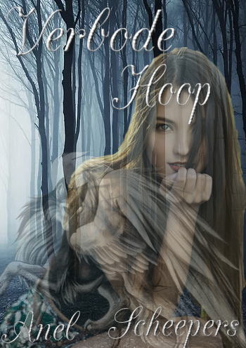

'N Fantastiese Avontuur
Verken die land van Alimara as die karakters hulself in Ravion bevind ...
'N Klein koninkryk noord van Tartarus.
Waar hulle woon en grootgeword het, maar waar al die aksie begin het.
In 'n klein koninkryk, Ravion, is daar baie aktiwiteite in die bos van die koninkryk.

Die Bloodstone-woud is vol bose en scary wesens, maar sommige dinge verkies om dit hul tuiste te maak, want dit was 'n plek waar hulle veilig voel. Die meeste van Ravion se resients durf nie daardie bos binnegaan nie, maar wanneer hulle iets doen, gebeur daar slegte dinge.
Baie gerugte het die ore van al die koninkryke en lande van Alimara bereik, die gerugte oor 'n legende waarvan niemand geweet het bestaan het totdat iemand eintlik daarheen gekom het nie.
Verken die bos, maak dit hul tuiste. Veilig van enigiets en enigeen wat hulle dalk wil benadeel.
In die middel van die bos lê daar 'n kamp ... Nie net 'n kamp nie. Kamp Malinovic, 'n kamp wat almal help wat dit nodig het, of hulle sterf of onsterflik is, sal almal halp.
Hierdie boek is nog steeds 'n werk vordering, maar ek sal deel wat ek op hierdie webwerf het.
Ek is die skrywer van hierdie boek, hou daarvan om met hierdie karakters te werk, of hulle die skurke is of nie. Ek is lief vir hulle almal, Raven met haar vrese, Jason met sy sjarme. Luna, 'n pragtige wolf met pragtige vlerke en wie wil nie van Daniel hou nie, hy is net so goed soos hy goed lyk.
Hier is waar ek sal verduidelik hoe ek my karakters sien en die binnekant van die verbode hoop-sage wys.
Ek het soveel van my karakters geleer.
Mense sê: "Jy kan nie leer van karakters wat jy geskep het nie."
Wel, ek sê dat hulle baie verkeerd is en dat hulle heel waarskynlik 'n ware karakter het wat hulle geskep het, het hulle selfs enige boeke gelees.
Enigeen kan sien dat 'n karakter nie net 'n karakter is nie, hulle het emosies en persoonlikhede wat hulle vir hulself gemaak het soos hulle groot geword het. Die lewe wat hulle geleef het en hoe dit hulle bewerkstellig het om beter of slegter keuses te maak. Brodian is byvoorbeeld 'n wonderlike ou, maar hy is 'n skurk, hou daarvan om ander dood te sien. Dit was net omdat sy pa besluit het dat Jason die beste persoon sou wees om die erfgenaam te wees om te kamp.
Plot
Die roman volg twee karakters, aangesien hulle verskillende persoonlikhede in die boek ontwikkel. Eerstens is daar Raven. Ek is 'n pragtige meisie met animalistiese aksie, want sy het grootgeword met die Viltornwolwe. Een ding wat sy nie kon doen nie, was die moedertaal van Progantia. Sy kon die taal van die diere net verstaan. Dit wys omdat sy leer om 'n normale meisie te wees terwyl sy haar steeds groeiende vermoëns beheer.
Tweedens volg die boek Jason, 'n geheimsinnige man met talle talente en geheim. In Camp Malinovic is dit net 'n paar mense wat ooit sy gesig gesien het. Sy familie en sy twee vriende, Drew en Daniel. Die roman toon sy ontwikkeling om meer te vertrou en hoe een persoon hom so maklik uit sy dop kan laat maak as niemand anders kan nie. Dit wys ook die opofferings wat Jason sal moet maak om diegene wat hy omgee, te help.